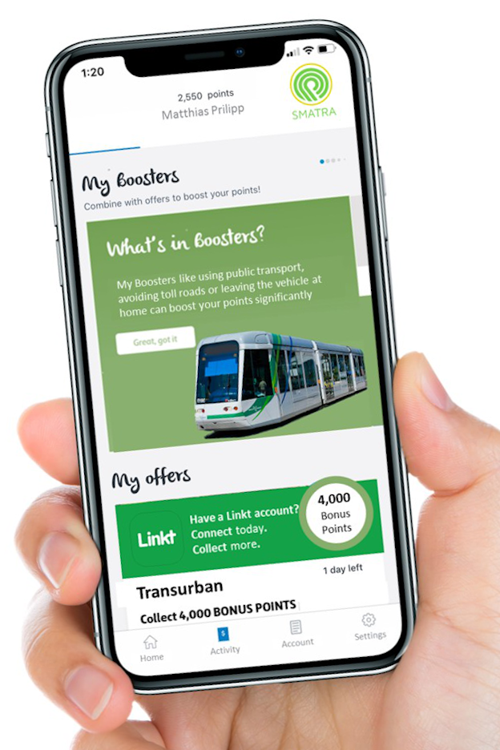
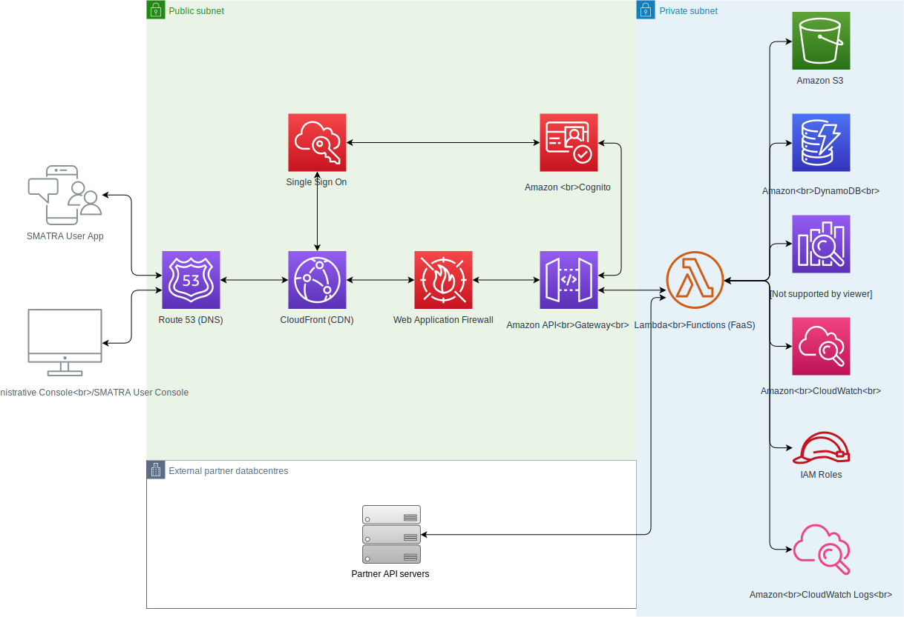

Project
Saving our cities one trip at a time

Overview
Our project is based on Matthias Prilipp’s project idea for Assignment 1, we agreed it provided a good combination of public usefulness with technical challenges.
The idea is to develop a mobile app, combining a loyalty program (like FlyBuys or Velocity) with a mobility tool, incentivising the use of public modes of transportation, or the use of toll roads outside of peak hour traffic.
The app function is to ease traffic congestion around major arteries of Australian capital cities. The App requires an integrated approach; tapping into third party applications like Toll Road, Public Transport or Parking Apps to facilitate commuters into desired forms of transportation.
Motivation
Due to ever crowded cities, maintaining liveable conditions will require city ecosystems to change dramatically. Inefficient and old transportation networks, as well as an increasing number of vehicles emitting CO2 posing a health risk, will have major implications on cities around Australia, a pertinent issue for its citizens.
“Traffic congestion is one of the most significant challenges facing our cities. Melbourne’s population is growing by around 325 people a day and is projected to overtake Sydney’s within a decade. Identified as the most congested city in the country, this was a factor in Melbourne losing its seven-year grip on the “world’s most liveable city” title last year.” (Misha Ketchell 2019)
Description

The App is called SMATRA (SMArt TRAffic). The overall goal of the App is to make travel around the city smarter by gamifying the experience of the everyday commute. Travelers and/or commuters can accumulate points by using different modes of transportation. As an example, if the customer links his/her Linkt account to the App the App detects when the commute occurred. If the event happened outside of the peak period (6:00 – 9:30 AM) the customer will accumulate points. If no commute is detected on traffic heavy days, due to the customer avoiding toll roads or leaving the vehicle at home, booster points will increase the points balance significantly.
The points balance allows the customer to achieve different membership statuses like silver, gold, or platinum, giving them access to further benefits. Some of these benefits may include access to fast traffic lanes, premium carparks at public events, or free train/tram access for a period. The App would follow a very similar structure to already existing loyalty program Apps, with a navigation bar at the bottom, and the current points status at the top.
The navigation at the bottom menu consists of Home, Activity, My Account, and Settings.
The “Home” menu gives the customer an overview of the current point status, membership status, programs currently enlisted in (e.g. Linkt account for toll roads, or Myki for public transport) and which special offer the user currently has activated (e.g. use of toll roads outside of peak hour for 1 month).
The “Activity” menu lists the user’s activities for the different modes of transportation. If not automatically captured by linked accounts, the customer has the option to scan receipts as proof of activity or to reclaim points. The list view shows the transport mode, the transaction date, amounts spent and the points that have been awarded.
The “My Account” menu features the account details of the user, and allows the user to edit personal information, such as contact methods, registered vehicles, or transport accounts that qualify and link to the app. It also gives the user the option to transfer points to other loyalty programs, users or receive cash payouts.
Under “Settings” the user can adjust their preferences, such as privacy, notifications, and authentication. It also allows the user to log out of the app, and gives the customer access to FAQ’s, and a support hotline. Lastly, the user can access the app’s terms of use and privacy policy, informing the user on their rights, obligations and how their data will be collected and used.
Tools and Technologies
To develop the SMATRA application, various tools and technologies will need to be employed. The development team will require a PC or Mac capable of running an IDE that supports iOS and Android development, an IDE that supports backend code development (e.g. Visual Studio Code, IntelliJ or PyCharm) and an IDE that supports iOS and Android development (e.g. Visual Studio Code, Reactide, etc.).
The development team will also need technologies to build their applications with, these may include programming frameworks and languages capable of running on iOS and Android (e.g. Xamarin and .Net Core, React Native and JavaScript, etc.), programming frameworks and languages capable of running on serverless compute (e.g. .Net Core, Java, Node.JS, etc.), and database technologies to store and retrieve user data and compile analytics (e.g. Postgres, MySQL, Cassandra, DynamoDB, MongoDB, etc.)
Lastly, the development team will require platforms to develop upon, including a serverless cloud compute capable hosting provider such as AWS, Azure or GCP, a platform to host source code (e.g. GitHub, GitLab or AWS CodeCommit), and a continuous deployment platform (e.g. Jenkins, BuildKite or Bamboo).
Skills Required
This application is built around data from 3rd parties, thus API’s between companies such as Linkt, Myki, Opal and our backend systems will drive its functionality. Strong strategic alliances to build buy-in, and drive innovative working relationships with transportation partners will determine the success of the app.
Additionally, the app will require strong adoption from the general public, thus the project will require experienced marketing know-how to ensure it is visible on platforms such as Google’s and Facebook’s advertising networks and is prominent in its app’s platform stores.
More technically, the app will require a team with knowledge of building mobile applications, including but not limited to iOS and Android development experience, experience in languages that support development for both platforms (Xamarin, React Native, etc.), SSO including OAUTH 2.0 and OIDC, and secrets management on mobile devices.
This app will also require strong, cloud-first development experience, including but not limited to full-stack AWS development, experience in loosely-coupled API driven applications, generating and consuming API’s in a secure manor, CICD pipelines, networking and security of cloud VPC’s, auto-scalability of services and infrastructure, SSO including OAUTH 2.0 and OIDC, and metrics, logging and tracing of loosely coupled applications.
Below is a basic architectural diagram, highlighting some of the backend services required to build this application:

Outcome
By relieving the pressure on our current traffic network, and shifting demand away from peak travel times, traffic congestion will undoubtedly ease, and with the right team, corporate and government support, this app could help change one of the biggest issues facing society, whilst making cities much more liveable.
Longer term adoption may have ancillary effects of educating younger generations on smarter mobility, encouraging greener forms of transport, and potentially lead to a change towards a more flexible work/life balance.
Misha Ketchell 2019, The Conversation Media Group Ltd, accessed 13 September 2019, https://theconversation.com/flexible-working-the-neglected-congestion-busting-solution-for-our-cities-122130
Amazon Web Services 2019, Amazon Web Services Inc, accessed 13 September 2019, https://aws.amazon.com/mobile/mobile-application-development/native/ios/